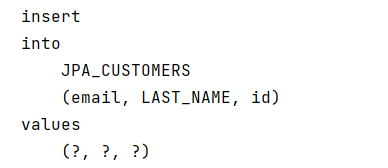
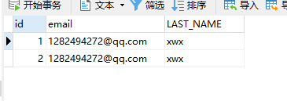
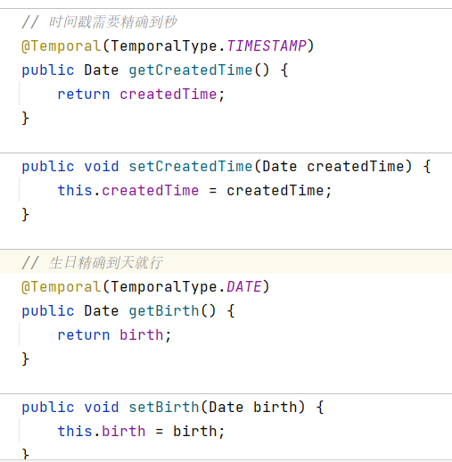
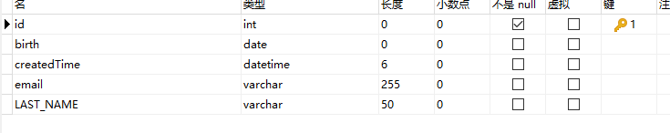
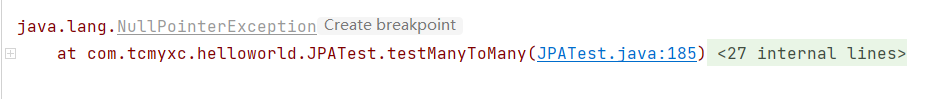
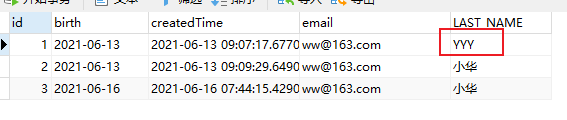
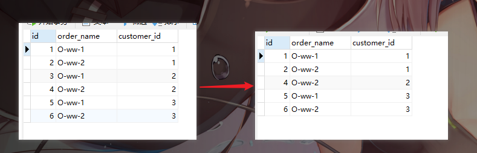

1、定义 JPA是Java Persistence API的简称，中文名Java持久层API，是JDK 5.0注解或XML描述对象－关系表的映射关系，并将运行期的实体对象持久化 到数据库中。
Sun引入新的JPA ORM规范出于两个原因：其一，简化现有Java EE和Java SE应用开发工作；其二，Sun希望整合ORM技术，实现天下归一。
JPA包括以下3方面的技术：
ORM映射元数据
JPA支持XML和JDK 5.0注解两种元数据的形式，元数据描述对象和表之间的映射关系，框架据此将实体对象持久化 到数据库表中；
API
用来操作实体对象，执行CRUD操作，框架在后台替代我们完成所有的事情，开发者从繁琐的JDBC和SQL代码中解脱出来。
查询语言
这是持久化操作中很重要的一个方面，通过面向对象 而非面向数据库的查询语言查询数据，避免程序的SQL语句紧密耦合。
JPA是需要Provider来实现其功能的，Hibernate就是JPA Provider中很强的一个，应该说无人能出其右。从功能上来说，JPA就是Hibernate功能的一个子集。
JPA 是规范
2、HelloWorld （1）创建 persistence.xml, 在这个文件中配置持久化单元
JPA 规范要求在类路径的 META-INF 目录下放置persistence.xml
1 2 3 4 5 6 7 8 9 10 11 12 13 14 15 16 17 18 19 20 21 22 23 24 25 26 27 28 29 30 31 32 33 34 35 36 37 38 39 40 41 42 43 <?xml version="1.0" encoding="UTF-8"?> <persistence xmlns ="http://java.sun.com/xml/ns/persistence" version ="2.0" > <persistence-unit name ="myJPA" transaction-type ="RESOURCE_LOCAL" > <provider > org.hibernate.jpa.HibernatePersistenceProvider</provider > <class > com.tcmyxc.helloworld.Customer</class > <properties > <property name ="javax.persistence.jdbc.user" value ="root" /> <property name ="javax.persistence.jdbc.password" value ="123456" /> <property name ="javax.persistence.jdbc.driver" value ="com.mysql.cj.jdbc.Driver" /> <property name ="javax.persistence.jdbc.url" value ="jdbc:mysql:///jpa_test?serverTimezone=UTC" /> <property name ="hibernate.show_sql" value ="true" /> <property name ="hibernate.hbm2ddl.auto" value ="update" /> <property name ="hibernate.format_sql" value ="true" /> </properties > </persistence-unit > </persistence >
（2）创建实体类, 使用 annotation 来描述实体类跟数据库表之间的映射关系.
1 2 3 4 5 6 7 8 9 10 11 12 13 14 15 16 17 18 19 20 21 22 23 24 25 26 27 28 29 30 31 32 33 34 35 36 37 38 @Table(name = "JPA_CUSTOMERS") @Entity public class Customer private Integer id; private String lastName; private String email; @GeneratedValue(strategy = GenerationType.AUTO) @Id public Integer getId () return id; } public void setId (Integer id) this .id = id; } @Column(name = "LAST_NAME") public String getLastName () return lastName; } public void setLastName (String lastName) this .lastName = lastName; } public String getEmail () return email; } public void setEmail (String email) this .email = email; } }
（3）使用 JPA API 完成数据增加、删除、修改和查询操作
1 2 3 4 5 6 7 8 9 10 11 12 13 14 15 16 17 18 19 20 21 22 23 24 25 26 27 28 29 public static void main (String[] args) String persistenceUnitName = "myJPA" ; EntityManagerFactory entityManagerFactory = Persistence.createEntityManagerFactory(persistenceUnitName); EntityManager entityManager = entityManagerFactory.createEntityManager(); EntityTransaction transaction = entityManager.getTransaction(); transaction.begin(); Customer customer = new Customer(); customer.setLastName("xwx" ); customer.setEmail("1282494272@qq.com" ); entityManager.persist(customer); transaction.commit(); entityManager.close(); entityManagerFactory.close(); }
运行截图：


3、注解 @Entity @Entity 标注用于实体类声明语句之前，指出该Java 类为实体类，将映射到指定的数据库表。
@Table 当实体类与其映射的数据库表名不同名时需要使用 @Table 标注说明，该标注与 @Entity 标注并列使用，置于实体类声明语句之前，可写于单独语句行，也可与声明语句同行。
@Table 标注的常用选项是 name，用于指明数据库的表名
@Table标注还有一个两个选项 catalog 和 schema 用于设置表所属的数据库目录或模式，通常为数据库名。
uniqueConstraints 选项用于设置约束条件，通常不须设置。
@Id @Id 标注用于声明一个实体类的属性映射为数据库的主键列。该属性通常置于属性声明语句之前，可与声明语句同行，也可写在单独行上。
@Id标注也可置于属性的getter方法之前。
@GeneratedValue @GeneratedValue 用于标注主键的生成策略，通过 strategy 属性指定。默认情况下，JPA 自动选择一个最适合底层数据库的主键生成策略：SqlServer 对应 identity，MySQL 对应 auto increment。
在 javax.persistence.GenerationType 中定义了以下几种可供选择的策略：
IDENTITY：采用数据库 ID自增长的方式来自增主键字段，Oracle 不支持这种方式；
AUTO ： JPA自动选择合适的策略，是默认选项；
SEQUENCE：通过序列产生主键，通过 @SequenceGenerator 注解指定序列名，MySql 不支持这种方式
TABLE：通过表产生主键，框架借由表模拟序列产生主键，使用该策略可以使应用更易于数据库移植。
@Basic @Basic 表示一个简单的属性到数据库表的字段的映射,对于没有任何标注的 getXxxx() 方法,默认即为@Basic
fetch: 表示该属性的读取策略,有 EAGER 和 LAZY 两种,分别表示主支抓取和延迟加载,默认为 EAGER.
optional:表示该属性是否允许为null, 默认为true
@Column 当实体的属性与其映射的数据库表的列不同名时需要使用@Column 标注说明，该属性通常置于实体的属性声明语句之前，还可与 @Id 标注一起使用。
@Column 标注的常用属性是 name，用于设置映射数据库表的列名。此外，该标注还包含其它多个属性，如：unique 、nullable、length 等。
@Column 标注的 columnDefinition 属性: 表示该字段在数据库中的实际类型.通常 ORM 框架可以根据属性类型自动判断数据库中字段的类型,但是对于Date类型仍无法确定数据库中字段类型究竟是DATE,TIME还是TIMESTAMP.此外,String的默认映射类型为VARCHAR, 如果要将 String 类型映射到特定数据库的 BLOB 或TEXT 字段类型.
@Column标注也可置于属性的getter方法之前
@Transient 表示该属性并非一个到数据库表的字段的映射,ORM框架将忽略该属性.
如果一个属性并非数据库表的字段映射,就务必将其标示为@Transient,否则,ORM框架默认其注解为@Basic�
@Temporal 在核心的 Java API 中并没有定义 Date 类型的精度(temporal precision). 而在数据库中,表示 Date 类型的数据有 DATE, TIME, 和 TIMESTAMP 三种精度(即单纯的日期,时间,或者两者 兼备). 在进行属性映射时可使用@Temporal注解来调整精度

对应数据库：

1 2 3 4 5 6 7 8 9 10 show create table jpa_customers; CREATE TABLE `jpa_customers` ( `id` int NOT NULL, `birth` date DEFAULT NULL, `createdTime` datetime(6) DEFAULT NULL, `email` varchar(255) DEFAULT NULL, `LAST_NAME` varchar(50) DEFAULT NULL, PRIMARY KEY (`id`) ) ENGINE=InnoDB DEFAULT CHARSET=utf8
4、JPA API Persistence 用于获取 EntityManagerFactory 实例。该类包含一个名为 createEntityManagerFactory 的 静态方法 。
createEntityManagerFactory 方法有如下两个重载版本。
带有一个参数的方法以 JPA 配置文件 persistence.xml 中的持久化单元名为参数
带有两个参数的方法：前一个参数含义相同，后一个参数 Map类型，用于设置 JPA 的相关属性，这时将忽略其它地方设置的属性。Map 对象的属性名必须是 JPA 实现库提供商的名字空间约定的属性名。
EntityManagerFactory EntityManagerFactory 接口主要用来创建 EntityManager 实例。该接口约定了如下4个方法：
createEntityManager()：用于创建实体管理器对象实例。
createEntityManager(Map map)：用于创建实体管理器对象实例的重载方法，Map 参数用于提供 EntityManager 的属性。
isOpen()：检查 EntityManagerFactory 是否处于打开状态。实体管理器工厂创建后一直处于打开状态，除非调用close()方法将其关闭。
close()：关闭 EntityManagerFactory 。 EntityManagerFactory 关闭后将释放所有资源，isOpen()方法测试将返回 false，其它方法将不能调用，否则将导致IllegalStateException异常。
EntityManager 是完成持久化操作的核心对象。实体作为普通 Java 对象，只有在调用 EntityManager 将其持久化后才会变成持久化对象。EntityManager 对象在一组实体类与底层数据源之间进行 O/R 映射的管理。它可以用来管理和更新 Entity Bean, 根椐主键查找 Entity Bean, 还可以通过JPQL语句查询实体。
实体的状态:
新建状态: 新创建的对象，尚未拥有持久性主键。
持久化状态：已经拥有持久性主键并和持久化建立了上下文环境
游离状态：拥有持久化主键，但是没有与持久化建立上下文环境
删除状态: 拥有持久化主键，已经和持久化建立上下文环境，但是从数据库中删除。
1 2 3 4 5 6 7 8 9 10 11 12 13 14 15 16 17 18 19 20 21 22 // 返回指定的 OID 对应的实体类对象 find (Class<T> entityClass,Object primaryKey) getReference (Class<T> entityClass,Object primaryKey) // 用于将新创建的 Entity 纳入到 EntityManager 的管理 persist (Object entity) remove (Object entity) // 用于处理 Entity 的同步。即数据库的插入和更新操作 merge (T entity) // 同步持久上下文环境 flush () // 设置持久上下文环境的Flush模式，自动更新或者提交事务才刷新 setFlushMode (FlushModeType flushMode) // 获取持久上下文环境的Flush模式 getFlushMode ()
EntityTransaction begin(), commit(), rollback() 等
5、映射关系 单向多对一 例如：多个订单属于一个客户
只需从n的一端可以访问1的一端
1、订单实体类
1 2 3 4 5 6 7 8 9 10 11 12 13 14 15 16 17 18 19 20 21 22 23 24 25 26 27 28 29 30 31 32 33 34 35 36 37 38 39 40 41 42 43 44 45 46 47 48 49 50 @Table(name = "jpa_order") @Entity public class Order private Integer id; private String orderName; private Customer customer; public Order () } @GeneratedValue @Id public Integer getId () return id; } public void setId (Integer id) this .id = id; } @Column(name = "order_name") public String getOrderName () return orderName; } public void setOrderName (String orderName) this .orderName = orderName; } @JoinColumn(name = "customer_id") @ManyToOne public Customer getCustomer () return customer; } public void setCustomer (Customer customer) this .customer = customer; } @Override public String toString () return "Order{" + "id=" + id + ", orderName='" + orderName + '\'' + ", customer=" + customer + '}' ; } }
2、测试
1 2 3 4 5 6 7 8 9 10 11 12 13 14 15 16 17 18 19 20 21 22 23 24 25 26 27 28 29 @Test public void testManyToOne () Customer customer = new Customer(); customer.setLastName("小华" ); customer.setEmail("ff@163.com" ); customer.setCreatedTime(new Date()); customer.setBirth(new Date()); Order order1 = new Order(); order1.setOrderName("O-FF-1" ); Order order2 = new Order(); order2.setOrderName("O-FF-2" ); Order order3 = new Order(); order3.setOrderName("O-FF-3" ); order1.setCustomer(customer); order2.setCustomer(customer); order3.setCustomer(customer); entityManager.persist(customer); entityManager.persist(order1); entityManager.persist(order2); entityManager.persist(order3); }
如果先保存订单，实际上会把订单的customer_id设为null，之后再进行更新操作，开销变大了
【建议】
先保存 1 的一端，再保存多的一端
删除的时候因为有外键关联，不能直接删除 1 的一端
单向一对多 一个客户有多个订单
1、修改订单类，去掉 Customer 属性
1 2 3 4 5 6 7 8 9 10 11 12 13 14 15 16 17 18 19 20 21 22 23 24 25 26 27 28 29 30 @Table(name = "jpa_order") @Entity public class Order private Integer id; private String orderName; public Order () } @GeneratedValue @Id public Integer getId () return id; } public void setId (Integer id) this .id = id; } @Column(name = "order_name") public String getOrderName () return orderName; } public void setOrderName (String orderName) this .orderName = orderName; } }
2、在用户里添加订单属性（是个集合或者列表）
1 2 3 4 5 6 7 8 9 10 11 12 private Set<Order> orders = new HashSet<>();@JoinColumn(name = "customer_id") @OneToMany public Set<Order> getOrders () return orders; } public void setOrders (Set<Order> orders) this .orders = orders; }
3、测试
1 2 3 4 5 6 7 8 9 10 11 12 13 14 15 16 17 18 19 20 21 22 23 24 25 26 27 28 29 @Test public void testOneToMany () Customer customer = new Customer(); customer.setLastName("小华" ); customer.setEmail("gg@163.com" ); customer.setCreatedTime(new Date()); customer.setBirth(new Date()); Order order1 = new Order(); order1.setOrderName("O-GG-1" ); Order order2 = new Order(); order2.setOrderName("O-GG-2" ); Order order3 = new Order(); order3.setOrderName("O-GG-3" ); customer.getOrders().add(order1); customer.getOrders().add(order2); customer.getOrders().add(order3); entityManager.persist(customer); entityManager.persist(order1); entityManager.persist(order2); entityManager.persist(order3); }
【注意】：单向一对多保存时一定会有更新语句发生，与保存顺序无关。因为多的一端再插入时不会同时插入外键列
删除一的一端，会把关联的多的一端外键置空，然后删除，可以在@OneToMany设置级联删除
双向多对一 订单属性里面有客户，客户里面有订单
1 2 3 4 5 6 7 8 9 10 11 12 13 14 15 16 public class Customer private Integer id; private String lastName; private String email; private Date createdTime; private Date birth; private Set<Order> orders = new HashSet<>(); @JoinColumn(name = "customer_id") @OneToMany public Set<Order> getOrders () return orders; } }
1 2 3 4 5 6 7 8 9 10 11 12 public class Order private Integer id; private String orderName; private Customer customer; @JoinColumn(name = "customer_id") @ManyToOne public Customer getCustomer () return customer; } }
映射的外键名要一样
1 2 3 4 5 6 7 8 9 10 11 12 13 14 15 16 17 18 19 20 21 22 23 24 25 26 27 28 @Test public void testManyToOne () Customer customer = new Customer(); customer.setLastName("小华" ); customer.setEmail("ww@163.com" ); customer.setCreatedTime(new Date()); customer.setBirth(new Date()); Order order1 = new Order(); order1.setOrderName("O-ww-1" ); Order order2 = new Order(); order2.setOrderName("O-ww-2" ); order1.setCustomer(customer); order2.setCustomer(customer); customer.getOrders().add(order1); customer.getOrders().add(order2); entityManager.persist(customer); entityManager.persist(order1); entityManager.persist(order2); }
如果先保存多的一端，会有多余的更新语句
让多的一方来维护关联关系，在 @OneToMany 中设置 mapperBy（值为多的一方的 customer 属性）
【注意】
如果在 1 的一端 @OneToMany 中使用 mapperBy，就不能再使用 @JoinColumn
双向一对一 基于外键的 1-1 关联关系：在双向的一对一关联中，需要在关系被维护端(inverse side)中的 @OneToOne 注释中指定 mappedBy，以指定是这一关联中的被维护端。同时需要在关系维护端(owner side)建立外键列指向关系被维护端的主键列。
设计：一个部门只能有一个经理，一个经理也只能管一个部门
1 2 3 4 5 6 7 8 9 10 11 12 13 14 15 16 @Table(name = "jpa_manager") @Entity public class Manager private Integer id; private String mgrName; private Department dept; @OneToOne(mappedBy = "mgr") public Department getDept () return dept; } ... }
1 2 3 4 5 6 7 8 9 10 11 12 13 14 15 16 @Table(name = "jpa_department") @Entity public class Department private Integer id; private String deptName; private Manager mgr; @OneToOne @JoinColumn(name = "mgr_id", unique = true) public Manager getMgr () return mgr; } ... }
测试：
1 2 3 4 5 6 7 8 9 10 11 12 13 14 15 16 @Test public void testOneToOne () Manager manager = new Manager(); manager.setMgrName("M-1" ); Department department = new Department(); department.setDeptName("D-1" ); manager.setDept(department); department.setMgr(manager); entityManager.persist(manager); entityManager.persist(department); }
测试查找：
1 2 3 4 5 6 7 8 @Test public void testOneToOneFind () Department dept = entityManager.find(Department.class, 1 ); System.out.println(dept.getDeptName()); System.out.println(dept.getMgr().getClass().getName()); }
1 2 3 4 5 6 7 8 9 10 11 12 13 14 15 16 Hibernate: select department0_ .id as id1_ 1_ 0_ , department0_ .deptName as deptname2_ 1_ 0_ , department0_ .mgr_ id as mgr_ id3_ 1_ 0_ , manager1_ .id as id1_ 2_ 1_ , manager1_ .mgr_ name as mgr_ name2_ 2_ 1_ from jpa_ department department0_ left outer join jpa_ manager manager1_ on department0_ .mgr_ id=manager1_ .id where department0_ .id=? D-1 com.tcmyxc.helloworld.Manager
【注意】：默认情况下，若获取不维护关联关系的一方，则也会通过左外连接获取其关联的对象，虽然可以改为懒加载，但是会多发 SQL 语句，得不偿失
双向多对多 在双向多对多关系中，我们必须指定一个关系维护端(owner side),可以通过 @ManyToMany 注释中指定 mappedBy 属性来标识其为关系维护端
1 2 3 4 5 6 7 8 9 10 11 12 13 14 15 16 17 18 19 20 21 22 23 24 25 26 @Entity @Table(name = "jpa_item") public class Item private Integer id; private String itemName; private Set<Category> categories = new HashSet<>(); @ManyToMany @JoinTable(joinColumns = { @JoinColumn(name = "item_id", // 中间表的外键名 referencedColumnName = "id")// 外键指向当前表的那个字段 }, inverseJoinColumns = { @JoinColumn(name = "category_id",// 中间表的外键名 referencedColumnName = "id") } ) public Set<Category> getCategories () return categories; } ... }
1 2 3 4 5 6 7 8 9 10 11 12 13 14 @Entity @Table(name = "jpa_category") public class Category private Integer id; private String categoryName; private Set<Item> items; @ManyToMany(mappedBy = "categories") public Set<Item> getItems () return items; } ... }
初始化表，可以发现建立了三张表
1 2 3 4 5 6 7 8 9 10 11 12 13 14 15 16 17 18 19 20 21 22 23 24 25 26 27 28 29 30 31 32 33 Hibernate: create table jpa_ category ( id integer not null auto_ increment, category_ name varchar(255), primary key (id) ) engine=InnoDB Hibernate: create table jpa_ item ( id integer not null auto_ increment, item_ name varchar(255), primary key (id) ) engine=InnoDB Hibernate: create table jpa_ item_ jpa_ category ( item_ id integer not null, category_ id integer not null, primary key (item_ id, category_ id) ) engine=InnoDB Hibernate: alter table jpa_ item_ jpa_ category add constraint FKedbrfsg4dplyysrucevm258pk foreign key (category_ id) references jpa_ category (id) Hibernate: alter table jpa_ item_ jpa_ category add constraint FK7vk3csx9i2cq3etibrkouumid foreign key (item_ id) references jpa_ item (id)
测试
1 2 3 4 5 6 7 8 9 10 11 12 13 14 15 16 17 18 19 20 21 22 23 24 25 26 27 28 29 30 31 @Test public void testManyToMany () Item i1 = new Item(); Item i2 = new Item(); i1.setItemName("item1" ); i2.setItemName("item2" ); Category c1 = new Category(); Category c2 = new Category(); Category c3 = new Category(); c1.setCategoryName("C-1" ); c2.setCategoryName("C-2" ); c3.setCategoryName("C-3" ); i1.getCategories().add(c1); i1.getCategories().add(c2); i1.getCategories().add(c3); i2.getCategories().add(c1); i2.getCategories().add(c3); entityManager.persist(i1); entityManager.persist(i2); entityManager.persist(c1); entityManager.persist(c2); entityManager.persist(c3); }
很尴尬地失败了

错误原因：不能直接使用接口变量，接口变量必须引用实现了接口的类的实例。
解决方法：在类定义那里把接口变量改为正确的引用。
查询
1 2 3 4 5 6 7 @Test public void testManyToManyFind () Item item = entityManager.find(Item.class, 1 ); System.out.println(item.getItemName()); System.out.println(item.getCategories().size()); }
1 2 3 4 5 6 7 8 9 10 11 12 13 14 15 16 17 18 19 20 21 22 23 Hibernate: select item0_ .id as id1_ 4_ 0_ , item0_ .item_ name as item_ nam2_ 4_ 0_ from jpa_ item item0_ where item0_ .id=? I-1 Hibernate: select categories0_ .item_ id as item_ id1_ 0_ 0_ , categories0_ .category_ id as category2_ 0_ 0_ , category1_ .id as id1_ 1_ 1_ , category1_ .category_ name as category2_ 1_ 1_ from item_ category categories0_ inner join jpa_ category category1_ on categories0_ .category_ id=category1_ .id where categories0_ .item_ id=? 2
可以看出来，这里默认用的是懒加载。其实从分类里面查标签也是懒加载。
6、JQPL Java Persistence Query Language 的简称。JPQL 是一种和 SQL 非常类似的中间性和对象化查询语言，它最终会被编译成针对不同底层数据库的 SQL 查询，从而屏蔽不同数据库的差异。
JPQL语言的语句可以是 select 语句、update 语句或delete语句，它们都通过 Query 接口封装执行
Query 接口 Query接口封装了执行数据库查询的相关方法。调用 EntityManager 的 createQuery、create NamedQuery 及 createNativeQuery 方法可以获得查询对象，进而可调用 Query 接口的相关方法来执行查询操作。
select 语句 用于执行查询。其语法可表示为：
1 2 3 4 5 6 select_clause form_clause [where_clause] [groupby_clause] [having_clause] [orderby_clause]
select、from 都是 JPQL 的关键字，通常全大写或全小写，建议不要大小写混用。
查询所有 实体的 JPQL 查询字串很简单，例如：
select o from Order o 或 select o from Order as o
关键字 as 可以省去。
标识符变量的命名规范与 Java 标识符相同，且区分大小写。
调用 EntityManager 的 createQuery() 方法可创建查询对象，接着调用 Query 接口的 getResultList() 方法就可获得查询结果集。例如：
1 2 3 4 5 6 Query query = entityManager.createQuery( "select o from Order o" ); List orders = query.getResultList(); Iterator iterator = orders.iterator(); while ( iterator.hasNext() ) { }
JPQL也支持包含参数的查询 ，例如：
select o from Orders o where o.id = :myId
select o from Orders o where o.id = :myId and o.customer = :customerName
注意：参数名前必须冠以冒号(:)，执行查询前须使用Query.setParameter(name, value)方法给参数赋值。
可以不使用参数名而使用参数的序号 ，例如：
select o from Order o where o.id = ?1 and o.customer = ?2
其中 ?1 代表第一个参数，?2 代表第一个参数。在执行查询之前需要使用重载方法Query.setParameter(pos, value) 提供参数值。
1 2 3 4 5 6 7 Query query = entityManager.createQuery( "select o from Orders o where o.id = ?1 and o.customer = ?2" ); query.setParameter( 1 , 2 ); query.setParameter( 2 , "John" ); List orders = query.getResultList(); ...
JPQL也支持子查询，在 where 或 having 子句中可以包含另一个查询。
查询部分属性
1 2 3 4 5 6 7 8 9 10 11 @Test public void testPartlyProperties () String jpql = "select c.email, c.lastName from Customer c where c.id > ?1" ; Query query = entityManager.createQuery(jpql); query.setParameter(1 , 1 ); List resultList = query.getResultList(); System.out.println(resultList); }
1 [[Ljava.lang.Object;@c6b2dd9, [Ljava.lang.Object;@73437222]
可以看到是个 Object 数组
如果想返回对应类的对象，需要有对应参数的构造器，同时修改查询语句
1 2 3 4 5 6 7 8 public Customer (String lastName, String email) this .lastName = lastName; this .email = email; } String jpql = "select new Customer(c.email, c.lastName) from Customer c where c.id > ?1" ;
1 [Customer{id=null, lastName='ww@163.com', email='小华', createdTime=null, birth=null}, Customer{id=null, lastName='ww@163.com', email='小华', createdTime=null, birth=null}]
这里 JQPL 帮我们做了底层的转换，所以数组里面放的是 Customer 对象
1 System.out.println(resultList.get(0 ).getClass().getName());
1 com.tcmyxc.helloworld.Customer
查询语句也可以放在实体类头上
1 2 3 4 5 6 7 8 9 10 11 12 13 14 15 @NamedQuery(name = "testNamedQuery", query = "SELECT c FROM Customer c where c.id = ?1") @Table(name = "JPA_CUSTOMERS") @Entity public class Customer 。。。 } @Test public void testNamedQuery () Query query = entityManager.createNamedQuery("testNamedQuerySQL" ).setParameter(1 , 1 ); Customer customer = (Customer) query.getSingleResult(); System.out.println(customer); }
1 Customer{id=1, lastName='小华', email='ww@163.com', createdTime=2021-06-13 17:07:17.677, birth=2021-06-13}
Native SQL
指原生的 SQL 语句，不再是 JQPL 的语法
1 2 3 4 5 6 @Test public void testNativedQuery () String sql = "select birth from JPA_CUSTOMERS c where c.id = 1" ; Query query = entityManager.createNativeQuery(sql); System.out.println(query.getSingleResult()); }
1 2 3 4 5 6 7 8 Hibernate: select birth from JPA_ CUSTOMERS c where c.id = 1 2021-06-13
JQPL 也支持 order by、group by、having、关联查询、子查询等
update 和 delete 更新操作
1 2 3 4 5 6 7 @Test public void testUpdate () String sql = "update Customer c set c.lastName = ?1 where c.id = ?2" ; Query query = entityManager.createQuery(sql); query.setParameter(1 , "YYY" ).setParameter(2 , 1 ); query.executeUpdate(); }

删除操作
1 2 3 4 5 6 7 @Test public void testDel () String sql = "delete from Order o where o.id = ?1" ; Query query = entityManager.createQuery(sql); query.setParameter(1 , 3 ); query.executeUpdate(); }
